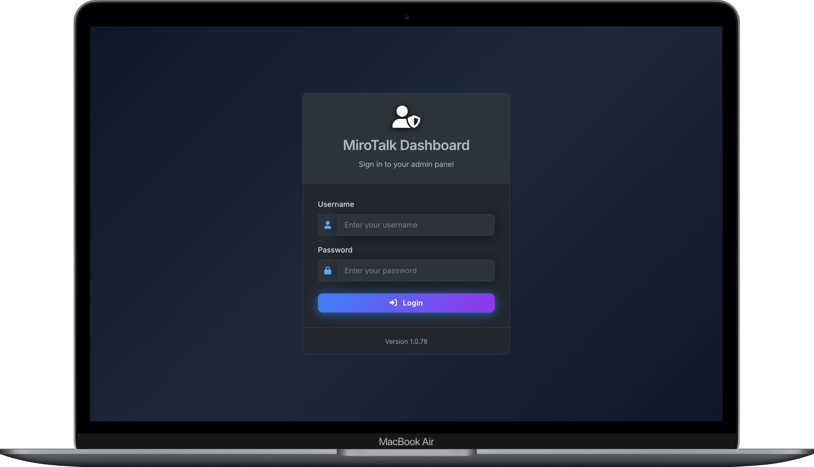

Communication products
Where people actually meet, call, or broadcast.
SFUP2PC2CCMEBRO
Start with what you want to do, how many people you need to connect, and what you want to spend on infrastructure. You do not need to understand WebRTC to make the right choice.

First choose the communication experience. Add a portal or admin dashboard only when you need those extra layers.
Where people actually meet, call, or broadcast.
WEB schedules and organizes meetings for users.
ADMIN manages services running on your servers.
Pick the outcome closest to yours. We will point you to the best starting place.
The safest default for scalable group meetings, webinars, and a Zoom-like experience.
Each product has a clear center of gravity. Start there, then customize as your needs grow.
These products deliver the live experience. Their differences are workflow, audience size, and where media traffic goes.

A complete conferencing experience for larger meetings, webinars, conferences, and broadcasting. The server forwards media so participant devices do less work as rooms grow.

Participants send media directly to each other. Your server mainly helps them connect, keeping routine hosting costs low.

A focused two-person experience and a practical base for embedding or customizing video without a full meeting platform.

Let a user accept an incoming call. Push notifications suit support, consultations, and telehealth-style workflows.

Optimized for one presenter and an audience. Use P2P mode for small audiences or SFU mode when you need better scale.
WEB and ADMIN do not replace a communication product. They sit around it and solve different problems.

A portal for accounts, rooms, schedules, and invitations that connects users to your communication products.
Explore WEB
Monitor, configure, update, start, and stop MiroTalk services across your servers.
Explore ADMINRelative guidance, not hosting quotes. Actual cost depends on concurrent users, quality, traffic, region, and media relaying.
| Project | What it does | Typical scale | Media path | Server cost | Main trade-off |
|---|---|---|---|---|---|
| SFU | Meetings and webinars | Small to large | Media server | Higher | More infrastructure |
| P2P | Small meetings | Small | Between users | Low | Harder on user devices |
| C2C | Camera calls | 2 people | Between users | Low | Only two participants |
| CME | Direct calling | 1-to-1 focused | Between users | Low | Specialized workflow |
| BRO | Broadcast | Small to large | P2P or SFU | Low to higher | Audience changes cost |
| WEB | Meeting portal | Any | Not a media engine | Additional | Needs communication app |
| ADMIN | Infrastructure control | Multiple instances | Not a media engine | Additional | Not needed for simple setups |
TURN note: Restrictive networks may force P2P media through a TURN relay. Relayed traffic consumes server bandwidth and can increase cost.
This explains most of the difference in scalability and running cost.
Every participant sends video directly to the others.
Each person sends once; the server forwards the right streams.
One broadcaster sends to viewers directly or through an SFU.
No architecture is cheapest, simplest, and most scalable in every situation.
P2P minimizes server cost. SFU spends more resources to make larger rooms practical. BRO centers an audience.
A two-person call and a conference with hundreds of viewers should not force the same infrastructure footprint.
A focused C2C or CME codebase is easier to adapt than stripping most features from a huge platform.
Use WEB to schedule an SFU meeting, then ADMIN to maintain the SFU deployment.
For most people seeking a modern, self-hosted video platform, SFU gives the most complete experience and clearest path to growth.
Explore MiroTalk SFU
Build in public under AGPLv3, or compare commercial options for private and paid products.